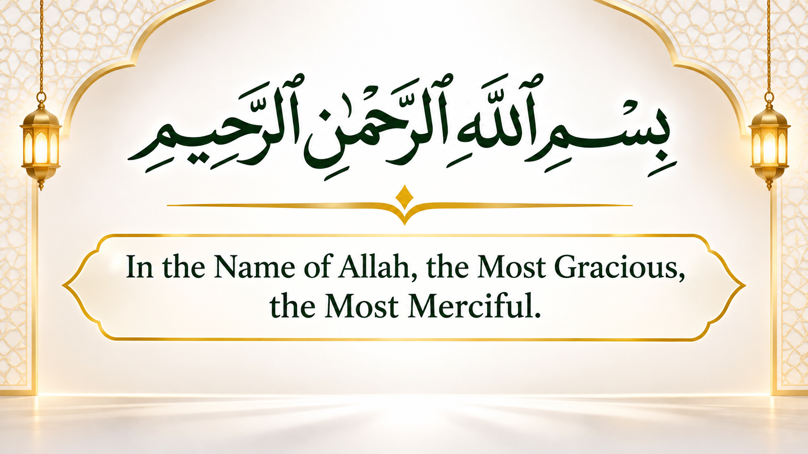
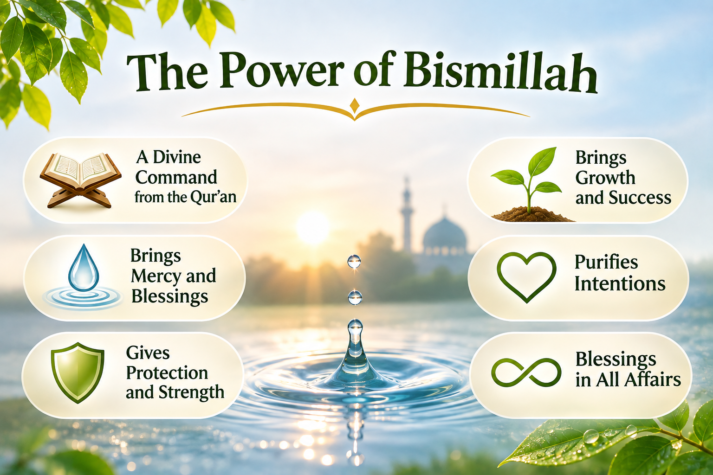

Bismillah’s Power#
The Key to Divine Mercy, Strength, and Blessings
Reading Objectives
By the end of this text, readers will be able to:
Explain the meaning and importance of Bismillah (“In the Name of God”).
Compare the experiences of the humble and proud travellers in the desert story.
Describe how nature illustrates dependence on Divine power and mercy.
Identify remembrance, thanks, and reflection as responses to God’s blessings.
Apply the passage’s message to everyday choices and actions.


Quran
And ˹remember˺ when Moses prayed for water for his people, We said, “Strike the rock with your staff.” Then twelve springs gushed out, ˹and˺ each tribe knew its drinking place. ˹We then said,˺ “Eat and drink of Allah’s provisions, and do not go about spreading corruption in the land.” (Al-Baqarah 2:60)
We ordered, “O fire! Be cool and safe for Abraham!” (Al-Anbiya 21:69)
Do not eat of what is not slaughtered in Allah’s Name. For that would certainly be ˹an act of˺ disobedience. Surely the devils whisper to their ˹human˺ associates to argue with you. If you were to obey them, then you ˹too˺ would be polytheists.(Al-An’am 6:121)
O believers! Do not waste your charity with reminders ˹of your generosity˺ or hurtful words, like those who donate their wealth just to show off and do not believe in Allah or the Last Day. Their example is that of a hard barren rock covered with a thin layer of soil hit by a strong rain—leaving it just a bare stone. Such people are unable to preserve the reward of their charity. Allah does not guide ˹such˺ disbelieving people. (Al-Baqarah 2:264)
Warm Up Questions#
What does “Bismillah” mean to you, and how does saying it influence your daily actions?
Remark
Bismillah means “In the Name of God.” Saying it reminds me to begin my actions with good intentions, seek God’s help, and remember His blessings.
What is the difference between being humble and being proud, especially when facing difficulties?
Remark
A humble person recognizes their limitations and seeks help, while a proud person relies only on themselves. Humility brings strength and confidence through trust in God.
Background#

In The First Word from The Words, Bediüzzaman Said Nursi explains the spiritual meaning of Bismillah, “In the Name of God.” He begins with a story of two travellers crossing a desert: one humbly travels under the protection of a tribal chief, while the other relies on himself and suffers hardships.
The story becomes a comparison for human life. Nursi describes people as dependent on God’s power and mercy and points to seeds, trees, gardens, animals, roots, and leaves as signs of Divine generosity. He concludes that blessings call for remembrance, thanks, and reflection.
Ar-Rahman and Ar-Rahim: Allah’s Mercy: Ar-Rahman (الرَّحْمَٰن) and Ar-Rahim (الرَّحِيم) are two beautiful names of Allah that express His mercy and compassion. Although both names come from the Arabic word rahmah, meaning mercy, they emphasize different aspects of Allah’s mercy. Ar-Rahman means “The Most Merciful” and refers to Allah’s vast and unlimited mercy that embraces all creation, including believers and nonbelievers. For example, Allah provides sunlight, water, food, and countless blessings to everyone. Ar-Rahim means “The Especially Merciful” and emphasizes Allah’s continuous mercy, particularly His special mercy toward believers through guidance, forgiveness, and eternal blessings. When we say Bismillah ir-Rahman ir-Rahim, we remember that Allah’s mercy is both universal and deeply personal, and that every blessing we receive comes from His kindness and generosity.
Main Passage#

Bismillah, “In the Name of God,” is the start of all things good. We too shall start with it. Know, O my soul! Just as this blessed phrase is a mark of Islam, so too it is constantly recited by all beings through their tongues of disposition. If you want to know what an inexhaustible strength, what an unending source of bounty is Bismillah, listen to the following story which is in the form of a comparison.
It goes like this: Someone who makes a journey through the deserts of Arabia has to travel in the name of a tribal chief and enter under his protection, for in this way he may be saved from the assaults of bandits and secure his needs. On his own he will perish in the face of innumerable enemies and needs.
And so, two men went on such a journey and entered the desert. One of them was modest and humble, the other proud and conceited. The humble man assumed the name of a tribal chief, while the proud man did not. The first travelled safely wherever he went. If he encountered bandits, he said: “I am travelling in the name of such-and-such tribal leader,” and they did not molest him. If he enters a tent, he was treated respectfully due to the name.
But the proud man suffered indescribable calamities throughout his journey. He both trembled before everything and begged from everything. He was abased and became an object of scorn.
My proud soul! You are the traveller, and this world is a desert. Your impotence and poverty have no limit, and your enemies and needs are endless. Since it is thus, take the name of the Pre-Eternal Ruler and Post-Eternal Lord of the desert and be saved from begging before the whole universe and trembling before every event.
Yes, this phrase is a treasury so blessed that your infinite impotence and poverty bind you to an infinite power and mercy; it makes your impotence and poverty a most acceptable intercessor at the Court of One All-Powerful and Compassionate.
The person who acts saying, “In the Name of God,” resembles someone who enrolls in the army. He acts in the name of the government; he has fear of no one; he speaks, performs every matter, and withstands everything in the name of the law and the name of the government.
At the beginning we said that all beings say “In the Name of God” through the tongue of disposition. Is that so? Indeed, it is so.
If you were to see that a single person had come and had driven all the inhabitants of a town to a place by force and compelled them to work, you would be certain that he had not acted in his own name and through his own power, but was a soldier, acting in the name of the government and relying on the power of the king.
In the same way, all things act in the name of Almighty God, for minute things like seeds and grains bear huge trees on their heads; they raise loads like mountains.
That means all trees say: “In the Name of God,” fill their hands from the treasury of mercy, and offer them to us.
All gardens say: “In the Name of God,” and become cauldrons from the kitchens of Divine power in which are cooked numerous varieties of different foods.
All blessed animals like cows, camels, sheep, and goats, say: “In the Name of God,” and produce springs of milk from the abundance of mercy, offering us a most delicate and pure food like the water of life in the name of the Provider.
The roots and rootlets, soft as silk, of plants, trees, and grasses say: “In the Name of God,” and pierce and pass through hard rock and earth. Mentioning the name of God, the name of the Most Merciful, everything becomes subjected to them.
The roots spreading through hard rock and earth and producing fruits as easily as the branches spread through the air and produce fruits, and the delicate green leaves retaining their moisture for months in the face of extreme heat, deal a slap in the mouths of Naturalists and jab a finger in their blind eyes, saying: “Even heat and hardness, in which you most trust, are under a command. For like the Staff of Moses, each of those silken rootlets conform to the command of, And We said, O Moses, strike the rock with your staff, and split the rock. (Qur’an, 2:60) And the delicate leaves fine as cigarette paper recite the verse, O fire be coolness and peace against the heat of the fire, each like the members of Abraham (UWP: Upon Whom Be Peace). (Qur’an, 21:69)
Since all things say: “In the Name of God,” and bearing God’s bounties in God’s name, give them to us, we too should say: “In the Name of God.” We should give in the name of God, and take in the name of God. And we should not take from heedless people who neglect to give in God’s name.
Question: We give a price to people, who are like tray-bearers. So what price does God want, Who is the true owner?
The Answer: Yes, the price the True Bestower of Bounties wants in return for those valuable bounties and goods is three things: one is remembrance, another is thanks, and the other is reflection. Saying, “In the Name of God” at the start is remembrance, and, “All praise be to God” at the end is thanks. And perceiving and thinking of those bounties, which are priceless wonders of art, being miracles of power of the Unique and Eternally Besought One and gifts of His mercy, is reflection.
However foolish it is to kiss the foot of a lowly man who conveys to you the precious gift of a king and not to recognize the gift’s owner, it is a thousand times more foolish to praise and love the apparent bestower of bounty and forget the True Bestower of Bounties.
O my soul! If you do not wish to be foolish in that way, give in God’s name, take in God’s name, begin in God’s name, and act in God’s name. And that’s the matter in a nutshell!
Challenging Question#
The author describes Bismillah as an “inexhaustible strength” and an “unending source of bounty.” How can a short phrase carry such great spiritual meaning?
Remark
Bismillah connects a person to God’s infinite power and mercy. Although the phrase is short, it reminds believers that their true strength and blessings come from God.
The author identifies remembrance, thanks, and reflection as three responses to God’s blessings. How are these three concepts connected, and how can they transform our daily lives?
Remark
Remembrance means beginning in God’s name, thanks means expressing gratitude for His blessings, and reflection means recognizing His power and mercy in creation. Together, they help us live with greater awareness, gratitude, and responsibility.
Summary#


Bediüzzaman teaches that saying Bismillah is more than speaking a phrase: it means beginning and acting with awareness of God. The humble traveller in the desert finds safety through a chief’s protection, while the proud traveller suffers by relying only on himself. In the same way, human beings can recognize their own limitations and turn toward God’s power and mercy.
Nature offers further examples. Small seeds grow into large trees, gardens produce food, and animals provide milk. The author sees these blessings as signs that creation acts through Divine power rather than independently.
Finally, he describes three responses to blessings: remembrance at the beginning, thanks at the end, and reflection on their source and meaning. The practical lesson is to give, receive, begin, and act in God’s name.
Reading Comprehension Questions#

What does “Bismillah” mean, and why does the author begin with it?
Why does a traveller in the Arabian desert seek the protection of a tribal chief?
How do the humble traveller and the proud traveller behave differently?
What does the desert represent when the author addresses his soul?
How is someone who says “In the Name of God” compared to a soldier?
What examples from trees, gardens, and animals illustrate the message?
What do the roots and leaves show about heat, hardness, and Divine command?
According to the passage, how should we give and receive blessings?
What three things does the True Bestower of Bounties ask in return?
What does the author mean by forgetting the true owner of a gift?
Critical Thinking Questions#

How might beginning an ordinary task with Bismillah change your intention?
Why can humility give someone strength while pride can make them vulnerable?
What modern situations resemble the two travellers’ different approaches?
How does recognizing dependence on God affect anxiety or self-confidence?
What can a seed growing into a tree teach us about blessings we overlook?
How might you practice remembrance, thanks, and reflection during a meal?
Why is it easy to thank the person delivering a gift but forget its ultimate source?
How can gratitude influence the way we use natural resources?
What does the phrase “tongue of disposition” suggest about how nature communicates?
Choose one daily habit: how could you begin it, carry it out, and finish it in the spirit of the passage?
Glossary#

Word |
Definition |
|---|---|
Abundance |
A very large amount of something; more than enough. |
Besought |
Asked earnestly or begged for help; past tense of beseech. |
Bestower |
Someone who gives gifts, blessings, or benefits. |
Bismillah |
An Arabic phrase meaning “In the Name of God.” |
Bounty |
A generous gift, blessing, or something given in large amounts. |
Calamities |
Serious disasters or events that cause suffering or damage. |
Cauldrons |
Large, deep pots used for cooking or boiling. |
Compassionate |
Showing kindness and concern for others who are suffering. |
Compelled |
Forced or strongly driven to do something. |
Conceited |
Too proud of yourself and your abilities. |
Disposition |
A person’s usual character, attitude, or nature. |
Heedless |
Not paying attention or being careless about something important. |
Impotence |
A lack of power or ability to do something. |
Inexhaustible |
So great that it can never be used up. |
Intercessor |
Someone who speaks or asks for help on behalf of another person. |
Mercy |
Kindness, forgiveness, or compassion shown to others. |
Molest |
To disturb, bother, or harm someone. |
Naturalists |
People who study nature or explain things through natural causes. |
Poverty |
The condition of having very little or lacking what is needed. |
Post-Eternal |
Having no end; continuing forever into the future. |
Pre-Eternal |
Having no beginning; existing forever in the past. |
Reflection |
Deep and careful thought about something. |
Remembrance |
Keeping someone or something in your thoughts and memory. |
Rootlets |
Very small, thin roots growing from larger roots. |
Scorn |
A feeling of strong disrespect or contempt. |
Subjected |
Made to experience something or placed under someone’s power or control. |
Treasury |
A place or source where valuable things are kept. |
Trembled |
Shook slightly because of fear, cold, or strong emotion. |
True Bestower of Bounties |
God, the One who gives all blessings and good things. |